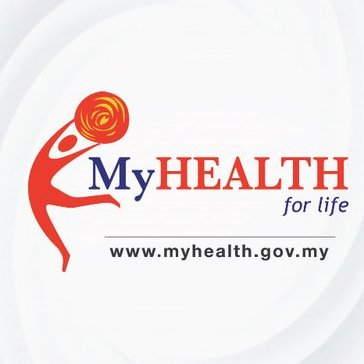
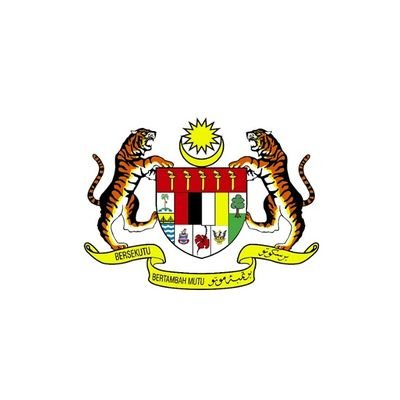
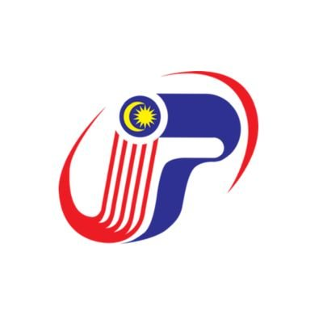
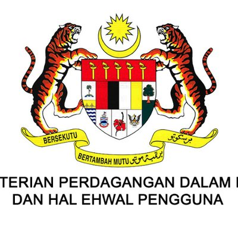
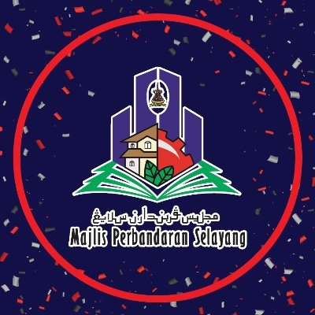
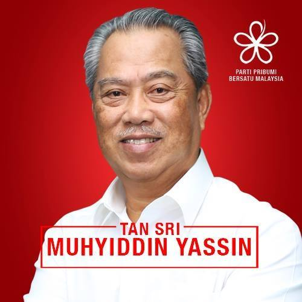
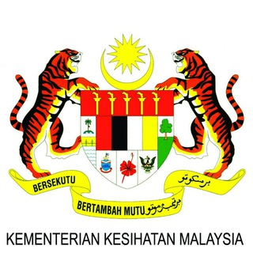
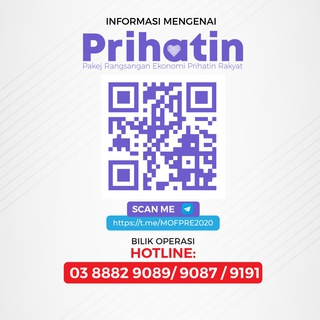
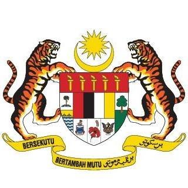

KKMPutrajaya
@KKMPutrajaya
The Official twitter for Ministry Of Health, Malaysia
KKMPutrajaya
@KKMPutrajaya
The Official twitter for Ministry Of Health, Malaysia
Majlis Keselamatan Negara Jabatan Perdana Menteri
@MKNJPM
Majlis Keselamatan Negara
Noor Hisham Abdullah
@DGHisham
Datuk Dr Noor Hisham Abdullah is the Director General of Health Malaysia and Senior Consultant Surgeon in Breast, Endocrine and General Surgery.

KKM Portal MyHealth
@MyHEALTHKKM
Maklumat kesihatan di hujung jari anda. Ingat sihat, ingat MyHealth!
Dr Adham Baba
@DrAdhamBaba
Minister Of Health, MP for Tenggara, Johor. #StayAtHome
NADMA Malaysia
@mynadma
Agensi Pengurusan Bencana Negara
Wisma Putra
@MalaysiaMFA
Official twitter account of the Ministry of Foreign Affairs Malaysia. Follow us for the latest on Malaysian #diplomacy.

Jab. Perdana Menteri
@jpmgov_
Official Twitter of Prime Minister's Department

Muhyiddin Yassin
@MuhyiddinYassin
Official Twitter of Muhyiddin Yassin, Prime Minister of Malaysia 🇲🇾FB - http://facebook.com/ts.muhyiddin

Jabatan Penerangan Malaysia
@JPenerangan
Menyampaikan maklumat Kerajaan kepada rakyat & mengumpul maklumat daripada rakyat untuk dimaklumkan kepada Kerajaan.
MINDEF Malaysia
@MINDEFMalaysia
Twitter Rasmi Kementerian Pertahanan Malaysia
Ismail Sabri
@IsmailSabri60
Official Twitter Minister of Defence, Ministry of Defence Malaysia (MinDef).
Polis Diraja M'sia
@PDRMsia
Segala maklumat jenayah/aduan awam hendaklah disalurkan dlm inbox Twitter Rasmi PDRM & identiti pemberi maklumat tidak akan didedahkan bagi tujuan keselamatan.
Dzulkefly Ahmad
@DrDzul
X-Minister of Health. MP for Kuala Selangor. Strategy Director of Parti Amanah Negara. A Muslim Democrat. PhD @imperialcollege (St.Mary's Hosp Medical School).
Mohd Zuki Ali
@zukiAli_
Ketua Setiausaha Negara / Chief Secretary to the Government of Malaysia

mykpdnhep
@mykpdnhep
Akaun Twitter Rasmi Kementerian Perdagangan Dalam Negeri dan Hal Ehwal Pengguna. Aduan : 1800 886 800/e-aduan.kpdnhep.gov.my
Dewan Bandaraya Kuala Lumpur
@DBKL2u
Agensi di Bawah Kementerian Wilayah Persekutuan sebagai PBT terunggul di Malaysia
Amirudin Shari
@AmirudinShari
Dato’ Menteri Besar Selangor • Ahli Dewan Negeri N16 Sungai Tua • Pengerusi Pakatan Harapan Selangor • #YNWA #BiruMuda
MBPJ
@pjcitycouncil
PETALING JAYA CITY COUNCIL - MISI PERKHIDMATAN PELANGGAN MESRA, CEPAT DAN TEPAT

MPSelayang
@MPSelayang
Official Twitter for Majlis Perbandaran Selayang
Majlis Perbandaran Subang Jaya
@MPSubangJaya
Twitter Rasmi Majlis Perbandaran Subang Jaya (MPSJ) tidak menerima sebarang laporan aduan. 03 - 8024 7700
KEMENTERIAN KESIHATAN MALAYSIA
@kementeriankesihatanmalaysia
The Official Facebook Page for Ministry Of Health, Malaysia
CPRC Kebangsaan - Kementerian Kesihatan Malaysia
@kkmcprc
CPRC ( Crisis Preparedness And Response Centre ) adalah satu pusat yang berkaitan dengan kesiapsiagaan, tindakan cepat ketika berlaku krisis kesihatan awam
Majlis Keselamatan Negara
@MajlisKeselamatanNegara
MKN adalah sebuah agensi peneraju yang menyelaras dasar berkaitan keselamatan sejak penubuhannya pada 1971
Noor Hisham Abdullah
@DGHisham
Datuk Dr Noor Hisham Abdullah is the Director General of Health Malaysia and Senior Consultant in Breast, Endocrine & General Surgery

Muhyiddin Yassin
@ts.muhyiddin
Prime Minister of Malaysia
Jabatan Penerangan Malaysia
@penerangan
Meningkatkan kefahaman, sokongan, keyakinan dan penglibatan masyarakat terhadap dasar dan program Kerajaan ke arah pembinaan negara bangsa yang bermaklumat, progresif, berintegriti, sejahtera serta bersatu-padu.
Polis Diraja Malaysia ( Royal Malaysia Police )
@PolisDirajaMalaysia
FACEBOOK RASMI Polis Diraja Malaysia
Kementerian Pertahanan Malaysia
@KementerianPertahanan
Laman Facebook Rasmi Kementerian Pertahanan Malaysia
Telegram
Majlis Keselamatan Negara (Rasmi)
https://t.me/MKNRasmi
Majlis Keselamatan Negara bertanggungjawab menyelaraskan dasar-dasar berkaitan keselamatan negara dan arahan mengenai langkah-langkah keselamatan termasuk gerakan-gerakan keselamatan, ketenteraman awam dan perkara-perkara melibatkan keselamatan.
CPRC Kementerian Kesihatan Malaysia
https://t.me/cprckkm
Crisis Preparedness and Response Center, Ministry of Health Malaysia

Sihat Milikku - Kementerian Kesihatan Malaysia
https://t.me/sihatmilikbersama
Saluran ini adalah untuk Bahagian Pendidikan Kesihatan, Kementerian Kesihatan Malaysia berkongsi maklumat pendidikan kesihatan dengan masyarakat.
Sebenarnya.my
https://t.me/sebenarnyamy
Platform rasmi Sebenarnya.my bagi menyampaikan maklumat berkenaan berita/kandungan palsu yang diterima secara dalam talian.

PRE PRIHATIN
https://t.me/mofpre2020
Hebahan capaian maklumat berkaitan pengumuman Pakej Rangsangan Ekonomi (PRE2020 dan PRE PRIHATIN RAKYAT) LAKSANA TEAM, MOF
Kementerian Kesihatan Malaysia
@kementeriankesihatanmalaysia
INSTAGRAM RASMI KKM
Majlis Keselamatan Negara
@mkn_rasmi
Instagram Rasmi Majlis Keselamatan Negara Malaysia 🇲🇾 (MKN)
Jabatan Penerangan Malaysia
@japenmalaysia
www.penerangan.gov.my
Dr. Dzulkefly Ahmad
@dzulkefly_ahmad
:: Mantan Menteri Kesihatan Malaysia 🇲🇾 :::: Ahli Parlimen Kuala Selangor (P096) :::: Pengarah Strategi Parti Amanah Negara :: #drdzulkeflyahmad
Kementerian Pertahanan
@mindefmalaysia
Instagram Rasmi Kementerian Pertahanan Malaysia
Polis Diraja Malaysia
@pdrmsia_official
Polis dan Masyarakat Berpisah Tiada

Jabatan Perdana Menteri
@jabatanperdanamenteri
www.jpm.gov.my
Tan Sri Muhyiddin Yassin
@muhyiddinyassin_official
Prime Minister Of Malaysia🇲🇾 President Of Parti Pribumi Bersatu Malaysia
Mohd Zuki Ali
@mohdzuki.ali
Ketua Setiausaha Negara
CPRC
+6010-9699435
Crisis Preparedness and Response Centre WhatsApp
Talian Aduan Merokok
+6010-8608949
Sedia menerima pertanyaan berkaitan COVID-19
MITI
+6012‑6072750
Kementerian Perdagangan Antarabangsa dan Industri
Kementerian Pembangunan Wanita, Keluarga, dan Masyarakat
+6019‑2615999
Ministry of Women, Family and Community Development
Website
Kementerian Kesihatan Malaysia
http://www.moh.gov.my/
Ministry of Health
Majlis Keselamatan Negara
https://www.mkn.gov.my/
National Security Council
Director General of Health Malaysia
https://kpkesihatan.com/
From the Desk of Director General of Health Malaysia
Jabatan Perdana Menteri
http://www.jpm.gov.my/
Prime Minister’s Department COVID-19 FAQs
Many different government agencies & entities are using various social media channels to publish different but related information on the COVID-19 pandemic.
However, there’s a lack of coordination between them in disseminating these important information to the media and public.
This growing list was created as the first step towards discovering a more viable and effective method to keep the public informed on such on-going crisis, while ensuring speed, correctness, and completeness.